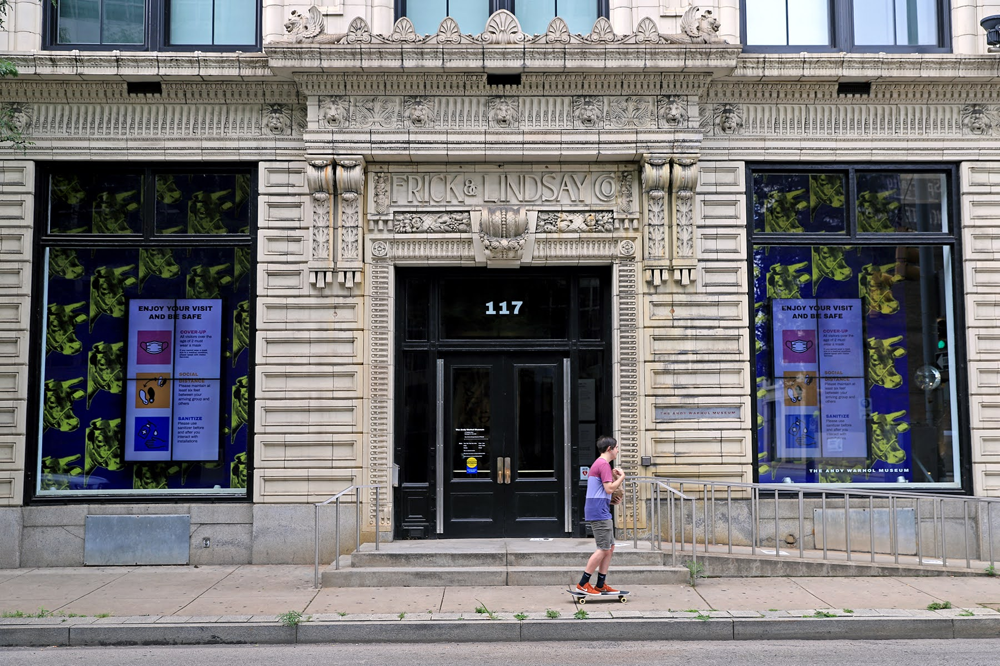

<%= t.include("partials/_analytics.html") %>
<%= t.include("partials/_head.html", grunt.data.json) %>
A Pittsburgh disability advocate shares her list of access wins and losses
<%= t.include("partials/_main-nav.html") %>
July 22, 2020
A Pittsburgh disability advocate shares her list of access wins and losses
Alisa Grishman and Emma Folts

The Andy Warhol Museum. (Photo by Jay Manning/PublicSource)